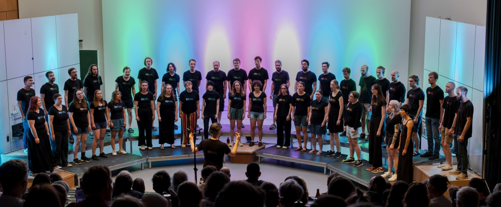

Willkommen beim Physikerchor Karlsruhe!

Der Physikerchor ist ein bunt gemischter Chor aus Studierenden und Berufstätigen verschiedener Fachrichtungen. Uns verbindet die gemeinsame Lust auf A-cappella-Chormusik und das Erarbeiten bunter Konzertprogramme in einer wertschätzenden Probenatmosphäre. Vielfalt wird bei uns großgeschrieben.
Unter der Leitung von Benjamin Förster bewegt sich der Chor durch verschiedene Epochen und Genres: So findet klassische Chormusik von der Renaissance bis hin zu zeitgenössischer Chorliteratur ebenso seinen Platz wie Pop- und Jazz-Arrangements. Diese Vielseitigkeit prägt unsere Programme und lässt sehr unterschiedliche Klangwelten miteinander in Beziehung treten.
"Somebody hears you" (2026)

Wir präsentieren auch in diesem Jahr ein spannendes und abwechslungsreiches A-cappella-Programm. Dabei spannen wir einen Bogen von der Renaissance und Klassik über Volkslieder, zeitgenössische Chormusik hin zu anspruchsvollen Pop- und Jazz-Arrangements.
"Somebody hears you." - Dieser Titel verweist auf das zentrale Motiv des Zuhörens und Gehörtwerdens. Dabei findet der Chor zwischen der tröstlichen Weite des Heimkommens und den großen Fragen nach Trost, Hoffnung und Sinn verschiedene Antworten auf die Frage, wie wir uns in unserer Menschlichkeit begegnen können. So entfaltet sich ein vielstimmiges Programm über Verbindung – zwischen Menschen, Kulturen und Zeiten.
Der Physikerchor lädt ein: hören wir einander zu, entdecken wir gemeinsame Klangräume, lassen wir uns von der Vielfalt menschlicher Stimmen berühren - mal nachdenklich, mal beschwingt, mal innig, und immer getragen von der Freude am gemeinsamen Singen.
Konzert-Termine:
Sa, 18.07.2026, 16 Uhr
Gaede-Hörsaal am KIT
Engesserstr. 7, Karlsruhe
So, 19.07.2026, 19 Uhr
Christi-Auferstehungskirche
Röntgenstr. 3, Karlsruhe
Leitung: Benjamin Förster
Du hast Lust bei uns mitzusingen?
Melde dich gerne per E-Mail bei uns. Wir melden uns dann bei dir, sobald es wieder losgeht. Ein Einstieg ist bei uns in der Regel zum Herbst möglich, ein genauer Termin steht derzeit noch nicht fest.
Wir proben jeden Montag um 18:45 Uhr auf dem Gelände des KIT (Karlsruher Instituts für Technologie).